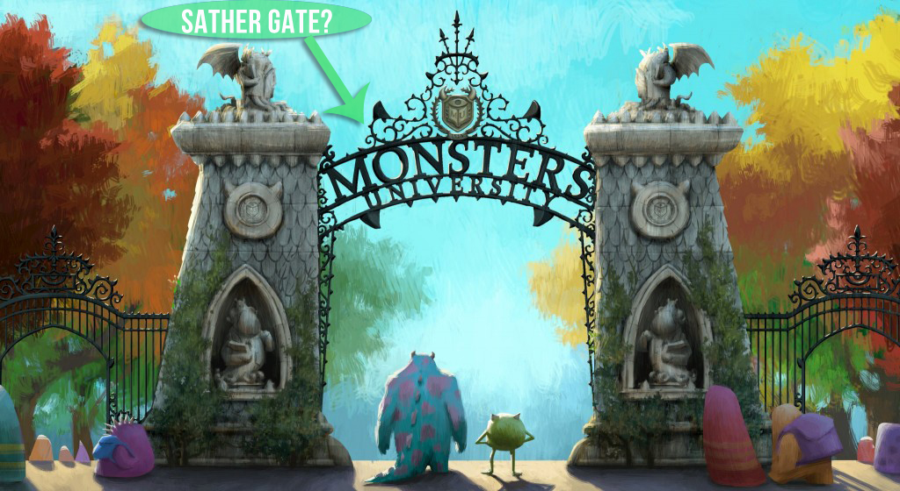

Sather Gate
-

The Beautiful Sather Gate
Sather Gate is a prominent landmark separating Sproul Plaza from the bridge over Strawberry Creek, leading to the center of the University of California, Berkeley campus.
250 In Tours -

The History of Sather Gate
Sather Gate was completed in 1910. Atop the gate are eight panels of bas-relief figures: four nude men representing the disciplines of law, letters, medicine, and mining, and four nude women representing the disciplines of agriculture, architecture, art, and electricity.
500
-
Thumbnail label
Cras justo odio, dapibus ac facilisis in, egestas eget quam. Donec id elit non mi porta gravida at eget metus. Nullam id dolor id nibh ultricies vehicula ut id elit.
56